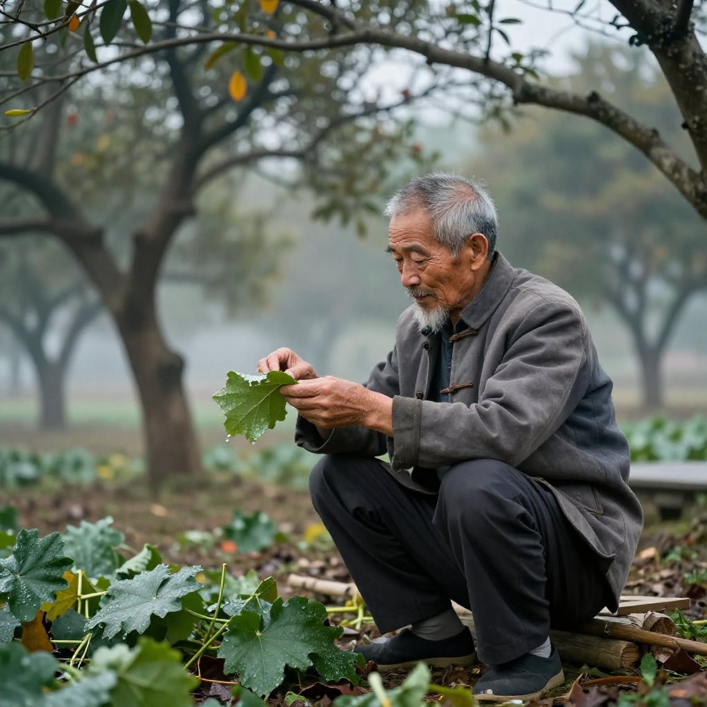
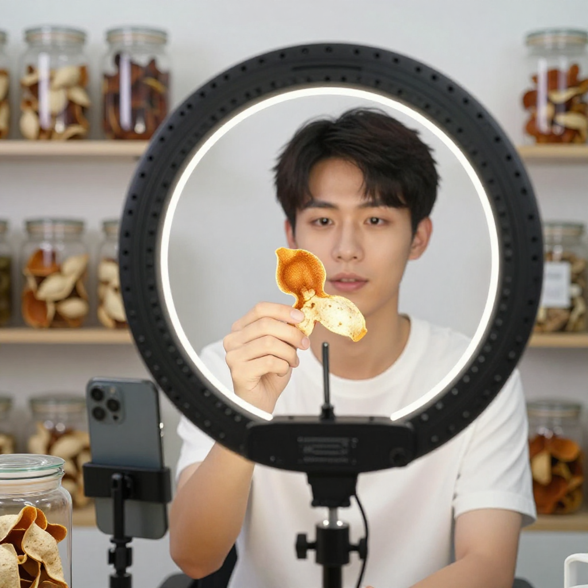
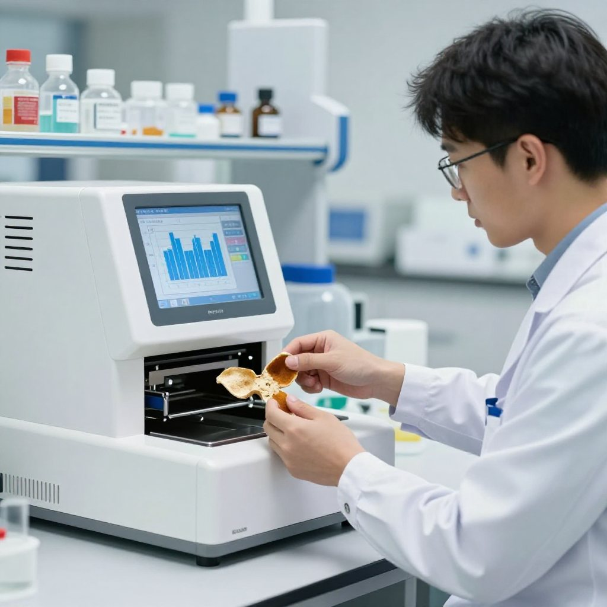
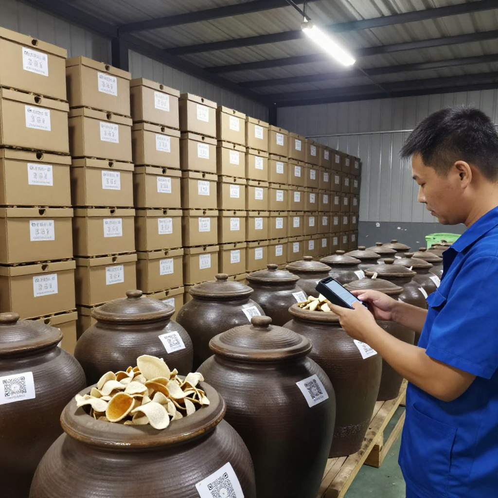
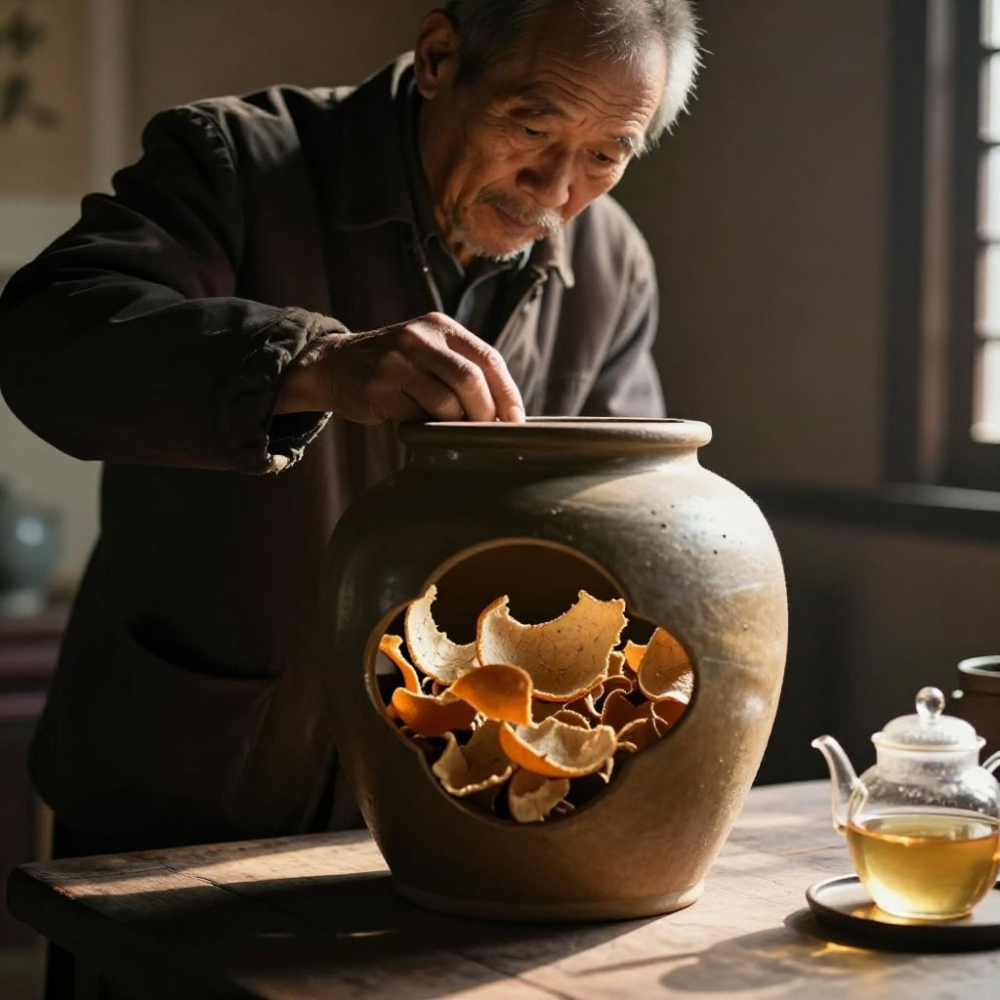

清晨六點，新會天馬村的霧還沒散盡，七十二歲的林偉師傅已經蹲在柑園地頭，用手摸了摸柑葉的背面。這片柑園，見證了他從十歲的放牛娃，到新會陳皮協會資深顧問的全部人生。而幾公里外的陳皮村，二十八歲的陳浩宇正準備開直播；在新會區農業科學研究所，張博士的檢測儀器已經預熱。
一、一塊陳皮的千年分量：天馬村的正三刀

「今日露水重，唔好急住開柑。」
他說新會陳皮之所以珍貴，首先因為這裏是全中國為數不多的「鹹淡水交匯」陳皮產區——潭江、西江與南海潮水倒灌，形成獨特的「濕盆地」小氣候，土壤裏的微生物種類比別的地方多。而「地利」呢？銀洲湖周邊的梅江、天馬、茶坑、東甲、西甲，歷史上被稱為「核心產區」。林師傅的柑園就在天馬村，距離梁啟超故居不過兩公里。
他指着遠處一棵老柑樹：「呢棵樹係我爺爺嗰代種o架，而家仲在結果。」至於「人和」，林師傅有自己的一套理論：「陳皮係活o既，你對佢好，佢就會回報你。」他的開皮手法——正三刀法，刀刀講究皮瓣三瓣分明、片張完整。這套技法，是新會陳皮炮製技藝的核心工序之一，2021年已入選國家級非物質文化遺產代表性項目名錄。
「每年十月到冬至，係曬陳皮的黃金時間。」林師傅會根據二十四節氣安排採收：立秋至霜降採柑青皮，霜降至小雪採微紅皮，小雪至冬至採大紅皮。「唔同時節的皮，香味唔同，就像茶葉分季節一樣。」他把這套「順天時，量地利」的智慧，稱為陳氏順天陳法。
二、一個陳皮村的新夢：直播室裏的望聞問切

距離天馬村約十五分鐘車程的新會陳皮村，是另一個故事。二十八歲的陳浩宇去年從深圳一家互聯網公司辭職回鄉，在陳皮村開了一間直播工作室。他的父母種了二十年陳皮，家裏囤了十幾箱不同年份的老皮，但一直走傳統批發渠道。
「收購商壓價壓得犀利，好皮都賣唔出好價錢。」
他決定改變。每天下午三點開直播，在鏡頭前示範如何用「望聞問切」四步鑒別新會陳皮：望油室——真新會陳皮油室排列整齊、紋理清晰，對光看通透有光澤；聞香氣——乾聞有清新柑果香和陳香，年份高的帶藥香和薄荷香，絕不會有酸餿味或香精味；問產地年份——要求看地理標誌產品專用標誌或溯源二維碼，掃碼可查果園、年份、加工地點；切質地——自然生曬的陳皮柔韌，內囊有自然脫落感，做舊皮顏色烏黑均勻、質地脆硬。
「好多人以為陳皮係老年人先中意，但我直播間最多嘅觀眾係二十五到三十五歲嘅白領，尤其係一線城市嘅後生女。」
他指着後台數據說，近三年陳皮養生茶飲的搜索量增長了三倍以上，好多年輕人熬夜多、濕氣重，開始找中醫食療。最高紀錄一晚賣出三百罐五年陳皮。但他強調自己不是「網紅」，而是「陳皮文化的傳播者」：「我每一場直播都會介紹新會陳皮的歷史文化、炮製技藝，希望客人買o既唔單止係一罐陳皮，仲有背後的文化價值。」
三、科學與傳統的碰撞：為陳皮建「基因身份證」

在新會區農業科學研究所，張博士的實驗室裏擺滿了不同年份的陳皮樣本。
「傳統講『陳久者良』，但科學要回答點解。」
他一邊戴手套，一邊小心地把一片十五年陳皮放進檢測儀器。研究結果顯示，關鍵在於黃酮類物質的轉化。新會陳皮含有三大活性物質：揮發油類、多糖類和黃酮類。在陳化過程中，黃酮類成分會緩慢轉化，橙皮苷等成分的含量會隨時間提升，這直接影響陳皮的藥效。「年份高的老陳皮，抗氧化和抗炎作用更強。」
更令人振奮的是，2025年《新會陳皮富硒種植關鍵技術與功效研究》獲得廣東省科技廳「粵港澳科技深度融合」專題立項支持——新會獨特的土壤環境不僅適宜茶枝柑生長，還能讓陳皮富含有機硒。
「以前外省冒充新會陳皮嘅問題好難杜絕，而家有指紋圖譜技術，可以精準鑒別真假。」
所謂「指紋圖譜」，是透過分析陳皮中三十九種黃酮類成分的比例，建立起新會陳皮的「基因身份證」。
四、陳皮產業的2026：從經驗說話到數據證真

2026年的新會陳皮產業，已經不一樣了。全產業鏈總產值突破二百八十三億元，連續三年位居「中國區域農業產業品牌影響力指數」第一位；新會區被授予「中國陳皮之都·新會」稱號，這是全國首個以陳皮命名的產業之都。「陳皮生產工」被批准成為國家新工種，職業標準編制工作同步啟動。新會陳皮還在2026年中國地理標誌農產品區域公用品牌聲譽榜單中以863.94分位列第九。
十月起，這條鏈條上又多了一道閘門。新會區農業農村局組織開展2026年新會柑鮮果產量申報核定工作，種植戶須分別在7、8、9月每月20日前完成產量申報，數據一經提交不可更改；10月開始，區、鎮、村三級幹部會落田做現場核定，確保申報數據與實際產量相符。同時，廣州商品交易所首筆陳皮跨境交易也已落地，走「數字交易＋金融賦能＋溯源倉儲」全鏈路，讓新會陳皮從初級農產品變成有國際流通屬性的標準化商品。
然而，繁榮背後也有隱憂。市場上所謂的「新會陳皮」，相當一部分並非正宗新會產，多用外地柑皮冒充。張博士憂心地說：
「消費者如果唔識分辨，好容易花大價錢買到假貨。」
他建議消費者通過溯源二維碼驗證，拒絕來路不明的所謂「老陳皮」。林師傅對這個問題看得更淡：「做好自己就得o架。」他說，真正的陳皮，是時光慢慢沉澱出來的，不需要騙人。
五、一兩陳皮一兩金：那罐1963年的皮

晚飯後，林師傅從床底拖出一個陶罐，打開蓋，一股醇厚的陳香撲面而來。
「呢罐係我老婆嫁我o個年（1963年）晒o既陳皮，六十三年囉。」
他輕輕用夾子夾出一小片，放進透明的玻璃壺裡，熱水一沖，湯色金黃透亮。「你試下。」入口醇和甘甜，回味悠長，帶有一種獨特的藥香和薄荷香，與普通陳皮截然不同。
「好嘢！我準備留畀我個孫，等到佢結婚嗰日，先開畀大家飲。」
他的孫女今年十二歲，每天放學後都會到柑園幫手澆水施肥。林師傅說，等她長大了就會知道，陳皮裡承載的不只是金錢價值，還有家族的記憶、技藝的傳承，以及這片土地最深沉的情感。
窗外，月光灑在天馬村的柑園上。幾公里外的新會陳皮村，直播室的燈火通明，陳浩宇正對着鏡頭展示一片三十年的老陳皮，屏幕上的訂單提示音接連不斷。而張博士的實驗室裡，新一批陳皮樣本的指紋圖譜正在電腦上慢慢成形。
常見問題
什麼是「正三刀法」？新會陳皮炮製技藝的核心開皮工序，要求三刀之下皮瓣三瓣分明、片張完整、不傷果肉。這套技藝已於2021年入選國家級非物質文化遺產代表性項目名錄。
「陳久者良」有科學根據嗎？有。新會陳皮含揮發油類、多糖類和黃酮類三大活性物質，陳化過程中黃酮類成分緩慢轉化，橙皮苷等含量隨時間提升，抗氧化與抗炎作用更強。
什麼是陳皮指紋圖譜？透過分析陳皮中三十九種黃酮類成分的比例，為新會陳皮建立「基因身份證」，用於精準分辨正宗新會皮與外地冒充皮。
十月起新會柑要做什麼核定？種植戶須在7、8、9月每月20日前完成鮮果產量線上申報（數據不可更改），10月起區、鎮、村三級幹部落田現場核定，從源頭杜絕虛標產量、銷量。
年輕人也適合喝新會陳皮嗎？適合。近三年陳皮養生茶飲搜索量增長三倍以上，二十五至三十五歲白領是主要新增人群；日常取3至5克煮水或配茶即可，不必貪多。
怎樣買到不放心的陳皮？認準地理標誌產品專用標誌或溯源二維碼，優先選擇能提供第三方檢測報告的渠道，拒絕來源不明的低價「老陳皮」。
結語
新會陳皮，就是這樣一塊承載着千年歷史、萬家生計，並在新時代煥發新生機的傳奇之物。它靜靜地生長在銀洲湖畔，吸收着鹹淡水交匯的精華，等待時光把它慢慢陳化——就像每一個新會人一樣，低調、沉穩，卻愈陳愈香。
想看一次真正的正三刀開皮、摸一摸剛曬開的新皮，來新會陳皮村南門牌坊G04找滢滢姐坐坐，店裡常年備着熱茶。想了解今年產區標準化的整體進展，看這篇《陳皮熱點日報：新會柑採收季臨近，產業標準化提速》；想看非遺技藝的傳承故事，翻翻這篇《新會陳皮的非遺密碼：從一片果皮到百年匠心》。
下期預告：滢滢姐會走進新會陳皮村的直播工作室，把「望聞問切」四步搬到鏡頭前，用外地皮和正宗新會皮做一次當場對比——同一杯水，兩種皮，差別到底有多大，一眼就能看出來。